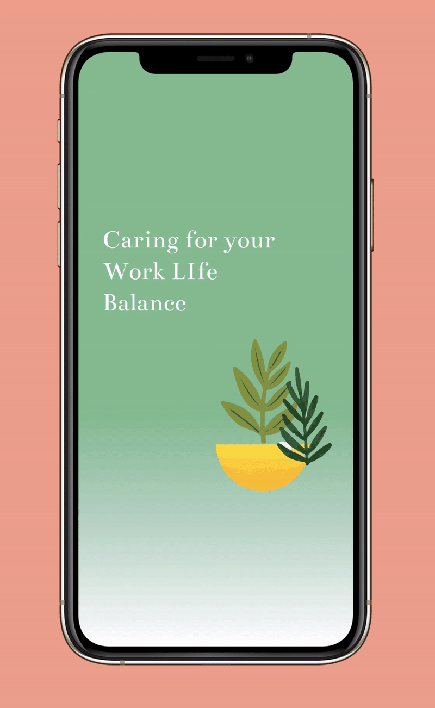

Susie Shuyun Chen
Design
About
Resume
Hi, I am Susie!
I research, I design and I connect meaningful dots.
Trajectory
UX Designer @
Sentineal Health
Interaction Design at CCA
Grab My
resume
Becoming an Artist
Experiencing the Art Making Process in the Chimera Art Museum
I care about wellness-being.

Working from home with healthy mind and body
A Caring system Designed for remote workers
Helping busy clinicians identifying care priority
Redesigning Clinician dashboard for sentinel Healthcare
I encourage people to follow their intuition.